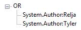
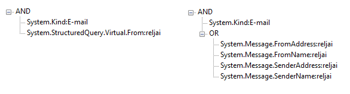

This topic is organized as follows:
Querying in Windows Search is based on the following four approaches:
AQS is the default query syntax used by Windows Search to query the index and to refine and narrow search parameters. AQS is primarily user facing, and can be used by users to build AQS queries, but can also be used by developers to build queries programmatically. In Windows 7, canonical AQS was introduced and must be used to programmatically generate AQS queries. In Windows 7 and later, a shortcut menu option can be available based on whether an AQS condition is met. For more information, see "Getting Dynamic Behavior for Static Verbs by Using Advanced Query Syntax" in Creating Context Menu Handlers. AQS queries can be limited to specific types of files, which are known as file kinds. For more information, see File Types and Associations. For reference documentation on the relevant properties, see System.Kind, and System.KindText.
NQS is a query syntax that is more relaxed than AQS, and is similar to human language. NQS can be used by Windows Search to query the index if NQS is selected instead of the default, AQS.
SQL is a text language that defines queries. SQL is common across many different database technologies. Windows Search uses SQL, implements a subset of it, and extends it by adding elements to the language. Windows Search SQL extends the standard SQL-92 and SQL-99 database query syntax to enhance its usefulness with text-based searches. All features of Windows Search SQL are compatible with Windows Search on Windows XP and Windows Server 2003, and later. For more information about Windows Search SQL, see Querying the Index with Windows Search SQL Syntax, and Overview of Windows Search SQL Syntax.
The structured query APIs are described later in this topic. For reference documentation on the structured query APIs, see Querying Interfaces. Interfaces such as ISearchQueryHelper help construct SQL strings from a set of input values. This interface converts AQS user queries to Windows Search SQL and specifies query restrictions that can be expressed in SQL but not in AQS. ISearchQueryHelper also obtains an OLEÂ DB connection string to connect to the Windows Search database.
You can execute your queries either locally or remotely. A local query using the FROM clause is shown in the following example. A local query queries the local SystemIndex catalog only.
FROM SystemIndex
A remote query using the FROM clause is shown in the following example. Adding ComputerName transforms the previous example into a remote query.
FROM [<ComputerName>.]SystemIndex
By default, Windows XP and Windows Server 2003 do not have Windows Search installed. Only Windows Search 4 (WS4) provides remote query support. Previous versions of Windows Desktop Search (WDS), such as 3.01 and earlier, do not support remote querying. With Windows Explorer you can query the local index of a remote computer for file system items (items handled by the "file:" protocol).
To retrieve an item by remote query, the item must meet the following requirements:
Windows Explorer has features for sharing items, including a "Public" share (\\Machine\Public\...) in the Network and Sharing Center, and a "Users" share (\\Machine\Users\...) for items shared via the Sharing Wizard. After you share the folder(s), you can query the local index by specifying the remote computer's machine name in the FROM clause, and a UNC path on the remote computer in the SCOPE clause. A remote query using the FROM and SCOPE clauses is shown in the following example.
SELECT System.ItemName FROM MachineName.SystemIndex WHERE SCOPE='file://MachineName/<path>'
The examples provided here use SQL.
A structured query provides the ability to search for information by Boolean combinations of queries over individual properties. In this topic we outline the functionality of the most important structured query APIs and methods. For reference documentation on the structured query APIs, see Querying Interfaces.
The IQueryParser::Parse method parses a user input string, and produces an interpretation in the form of an IQuerySolution. If the pCustomProperties parameter of that method is not null, then it is an enumeration of IRichChunk objects(one for each recognized custom property). The other IQueryParser methods permit the application to set several options, such as locale, a schema, a word breaker, and handlers for various types of named entities. IQueryParser::GetSchemaProvider returns an ISchemaProvider interface for browsing the loaded schema.
The IQuerySolution interface provides all information about the result of parsing an input string. Because IQuerySolution is also an IConditionFactory interface, additional condition tree nodes can be created. The IQuerySolution::GetQuery method produces a condition tree for the interpretation. IQuerySolution::GetQuery also returns the semantic type.
IConditionFactory creates condition tree nodes. If the simplify parameter of IConditionFactory::MakeNot is VARIANT_TRUE, then the resulting ICondition is simplified, and need not be a negation node. If the pSubConditions parameter of IConditionFactory::MakeAndOr is not null, then that parameter should be an enumeration of ICondition objects, and become subtrees.IConditionFactory::MakeLeaf constructs a leaf node with a specified property name, operation, and value. The string in the pValueType parameter should be the name of a semantic type from the schema. If the expand parameter is VARIANT_TRUE and the property is virtual, the resulting condition tree is typically a disjunction resulting from expanding the property to its defined constituents. If not null, the pPropertyNameTerm, pOperatorTerm, and pValueTerm parameters should identify terms indicating the property, operation, and value.
The ICondition interface is a single node in a condition tree. The node can be a negation node, AND node, OR node, or a leaf node. For a non-leaf node ICondition::GetSubConditions returns an enumeration of the subtrees. For a leaf node the following methods of ICondition return the following values:
Each IRichChunk object identifies a token span and a string. IRichChunk is a utility interface that represents information about a span (typically a span of tokens) identified by a starting position and length. This span information includes a string and/or a VARIANT.
The IConditionGenerator interface is provided by the application to handle recognition and condition tree generation for a named entity type. A condition generator is given to an IQueryParser through IQueryParser::SetMultiOption. IQueryParser calls IConditionGenerator::Initialize with an ISchemaProvider for the currently loaded schema. Doing so permits IConditionGenerator to obtain any schema information that is required. When parsing an input string, IQueryParser calls the IConditionGenerator::RecognizeNamedEntities method of each IConditionGenerator, so that the occurrence of named entities it recognizes in the input string can be reported. IQueryParser can make use of the current locale and should make use of the tokenization of the input as it needs to report the token spans of any named entities.
When IQueryParser is about to emit a leaf node, and the semantic type of the value matches the named entity type for an IConditionGenerator, IQueryParser calls IConditionGenerator::GenerateforLeaf with the information for the node to be generated. If the IConditionGenerator returns S_OK, it should return a condition tree (which does not have to be a leaf node), and inform IQueryParser whether to suppress the alternative string interpretation that it would normally generate as a precaution.
The ITokenCollection::NumberOfTokens method returns the number of tokens.ITokenCollection::GetToken returns information about the ith token. The beginning and length are character positions in the input string. The returned text will be non-null only if there is a text overriding the characters from the input string. This is used, for example, to override a dash in the input string with NOT when that dash is in a context where it should be interpreted as a negation.
IConditionGenerator calls INamedEntityCollector::Add for each named entity it recognized. The spans are token spans. It must always be the case that beginSpan ? beginActual < endActual ? endSpan. beginSpan and endSpan may differ from beginActual and endActual if the named entity begins and/or ends with semantically insignificant tokens such as quotation marks (that are nevertheless covered by the named entity). The value must be expressed as a string and will subsequently appear in a call to IConditionGenerator::GenerateForLeaf.
The ISchemaProvider interface can be used to browse a loaded schema for entities (types) and relations (properties). Here's what it's individual methods do:
The IEntity interface is a schema entity that represents a type that has a name, has a number of named relationships to other types (properties), and derives from a base entity. Here's what its individual methods do:
The IRelationship interface represents a relationship between two entities: a source and a destination. Here's what it's individual methods do:
Metadata are key-value pairs that are each associated with either an entity, a relationship, or the whole schema. Because keys are not necessarily unique, a collection of metadata can be thought of as a multi-map. IMetaData::GetData is called to retrieve the key and value for a metatdata pair.
The following scenarios describe the use of structured query APIs in Windows Search in common querying scenarios, such as creating a condition tree and querying the index.
When a query is created, its scope is defined by telling the system where to search. This restricts the search results. After the scope is defined, a filter is applied, and a filter set is returned. Search results are restricted by building a condition tree with leaf nodes, similar to a graph. Those conditions are then extracted. A condition tree is a Boolean combination (AND, OR, NOT) of leaf conditions, each of which relates a property, through an operation, to a value. A leaf node represents a restriction on a single property to a value through some operations.
A filter restriction requires a logical expression that describes the restriction. Defining this expression starts with the ICondition interface, which is used to create a single node in a condition tree. Because there is only one condition in the following example, the tree does not change.
[
object,
uuid(0FC988D4-C935-4b97-A973-46282EA175C8),
pointer_default(unique)
]
interface ICondition : IPersistStream
{
HRESULT GetConditionType([out, retval] CONDITION_TYPE* pNodeType);
HRESULT GetSubConditions([in] REFIID riid, [out, retval, iid_is(riid)] void** ppv);
[local] HRESULT GetComparisonInfo([out, annotation("__deref_opt_out")] LPWSTR *ppszPropertyName, [out, annotation("__out_opt")] CONDITION_OPERATION *pOperation, [out, annotation("__out_opt")] PROPVARIANT *pValue);
HRESULT GetValueType([out, retval] LPWSTR* ppszValueTypeName);
HRESULT GetValueNormalization([out, retval] LPWSTR* ppszNormalization);
[local] HRESULT GetInputTerms([out, annotation("__out_opt")] IRichChunk** ppPropertyTerm, [out, annotation("__out_opt")] IRichChunk** ppOperationTerm, [out, annotation("__out_opt")] IRichChunk** ppValueTerm);
HRESULT Clone([out, retval] ICondition** ppc);
};
If there is more than one filter condition, then AND and other Boolean operators are used to achieve a single tree. AND-trees and OR-trees represent conjunctions and disjunctions of their subtrees. A NOT-tree represents the negation of its single subtree. AQS provides a text approach to achieving logical expressions with Boolean operators, and is often simpler.
In the next example we convert the condition tree (ICondition) into visual form. The query parser, using the IQueryParser interface, converts the ICondition into a rich text formatted (RTF) query string. The IQueryParser::RestateToString method returns the query text, while the IQueryParser::Parse method produces an IQuerySolution interface. The following example shows how to do all that.
[
object,
uuid(2EBDEE67-3505-43f8-9946-EA44ABC8E5B0),
pointer_default(unique)
]
interface IQueryParser : IUnknown
{
HRESULT Parse([in] LPCWSTR pszInputString, [in] IEnumUnknown* pCustomProperties, [out, retval] IQuerySolution** ppSolution);
HRESULT SetOption([in] STRUCTURED_QUERY_SINGLE_OPTION option, [in] PROPVARIANT const* pOptionValue);
HRESULT GetOption([in] STRUCTURED_QUERY_SINGLE_OPTION option, [out, retval] PROPVARIANT* pOptionValue);
HRESULT SetMultiOption([in] STRUCTURED_QUERY_MULTIOPTION option, [in] LPCWSTR pszOptionKey, [in] PROPVARIANT const* pOptionValue);
HRESULT GetSchemaProvider([out, retval] ISchemaProvider** ppSchemaProvider);
HRESULT RestateToString([in] ICondition* pCondition, [in] BOOL fUseEnglish, [out] LPWSTR* ppszQueryString);
HRESULT ParsePropertyValue([in] LPCWSTR pszPropertyName, [in] LPCWSTR pszInputString, [out, retval] IQuerySolution** ppSolution);
HRESULT RestatePropertyValueToString([in] ICondition* pCondition, [in] BOOL fUseEnglish, [out] LPWSTR* ppszPropertyName, [out] LPWSTR* ppszQueryString);
};
The main input of IQueryParser::Parse is a user input string to be parsed, but the application can also inform the query parser of any properties it has recognized in the input (from application-specific syntax). The output of IQueryParser::Parse is an IQuerySolution, which provides all information pertaining to that parse invocation. There are methods for obtaining the input string, how the input string was tokenized, any parse errors, and the parsed query as condition tree, represented by an ICondition. The following example shows ...
[
object,
uuid(D6EBC66B-8921-4193-AFDD-A1789FB7FF57),
pointer_default(unique)
]
interface IQuerySolution : IConditionFactory
{
[local] HRESULT GetQuery([out, annotation("__out_opt")] ICondition** ppQueryNode, [out, annotation("__out_opt")] IEntity** ppMainType);
HRESULT GetErrors([in] REFIID riid, [out, retval, iid_is(riid)] void** ppParseErrors);
[local] HRESULT GetLexicalData([out, annotation("__deref_opt_out")] LPWSTR* ppszInputString, [out, annotation("__out_opt")] ITokenCollection** ppTokens, [out, annotation("__out_opt")] LCID* pLocale, [out, annotation("__out_opt")] IUnknown** ppWordBreaker);
}
In the previous example, IQuerySolution::GetQuery could obtain any information about the query including the original text, tokens that comprise the text, or the condition tree. Examples of possible returned query values are listed in the following table.
| Examples of returned query values | Description |
|---|---|
author:relja OR author:tyler |
The query text that IQueryParser::RestateToString returns |
?author?, ?:?, ?relja?, ?OR?, ?author?, ?:?, ?tyler? |
The break-down of tokens |
|  | An unresolved condition tree |
Â
The initial condition tree that is returned is unresolved. In an unresolved condition tree, date and time references, such as date:yesterday, are not converted to absolute time. Also, virtual properties are not expanded. Virtual properties are properties that act as aggregates of multiple properties.
For example, the query kind:email from:reljai produces the following unresolved and resolved condition trees. The unresolved condition tree is to the left, and the resolved condition tree is to the right.

The resolved tree can be obtained by calling IConditionFactory::Resolve. However, passing SQRO_DONT_RESOLVE_DATETIME leaves the date and time unresolved. There are advantages to an unresolved condition tree, because an unresolved condition tree contains information about the query. Each leaf node points to the tokens returned by IQuerySolution::GetLexicalData, which correspond to the property, operator, and value when using the IRichChunk interface. The following example shows ...
interface ITokenCollection : IUnknown
{
HRESULT NumberOfTokens(ULONG* pCount);
HRESULT GetToken([in] ULONG i, [out, annotation("__out_opt")] ULONG* pBegin, [out, annotation("__out_opt")] ULONG* pLength, [out, annotation("__deref_opt_out")] LPWSTR* ppsz);
};
ICondition:: GetInputTerms([out, annotation("__out_opt")]
IRichChunk** ppPropertyTerm, [out, annotation("__out_opt")]
IRichChunk** ppOperationTerm, [out, annotation("__out_opt")]
IRichChunk** ppValueTerm);
interface IRichChunk : IUnknown
{
HRESULT GetData([out, annotation("__out_opt")] ULONG* pFirstPos, [out, annotation("__out_opt")] ULONG* pLength, [out, annotation("__deref_opt_out")] LPWSTR* ppsz, [out, annotation("__out_opt")] PROPVARIANT* pValue);
}
There are several approaches to querying the index. Some are based on the SQL and others are based on AQS. You can also query the Windows Search index programmatically by using querying interfaces. There are three interfaces that are specific to querying the index: ISearchQueryHelper, IRowsetPrioritization, and IRowsetEvents. For conceptual information, see Querying the Index Programmatically.
You can develop a component or helper class to query the index by using the ISearchQueryHelper interface. This interface is implemented as a helper class to ISearchCatalogManager (and ISearchCatalogManager2), and is obtained by calling ISearchCatalogManager::GetQueryHelper. For conceptual information, see Querying the Index with ISearchQueryHelper.
ISearchQueryHelper permits you to:
Indexing prioritization and rowset events are supported in Windows 7 and later. With IRowsetPrioritization there is a priority stack that enables the client to request that the scopes used in a particular query be given higher than normal priority. IRowsetEvents provides notification of changes to items in rowsets, including the addition of new items, the deletion of items, and the modification of item data. Using rowset event notifications ensures that the results for existing queries are as up to date as possible. For conceptual information, see Indexing Prioritization and Rowset Events in Windows 7.
Indexing, Querying and Notifications in Windows Search
Indexing Process in Windows Search
Notifications Process in Windows Search
Â
Â